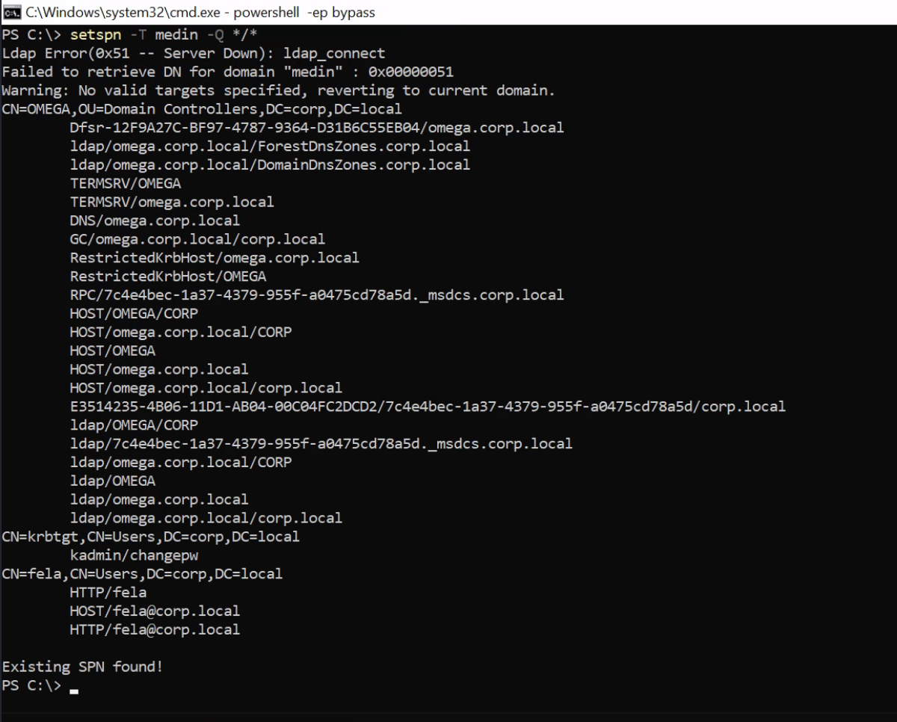

Find SPNs
Lets first enumerate Windows. If we run setspn -T medin -Q */* we can extract all accounts in the SPN.
SPN is the Service Principal Name, and is the mapping between service and account.
setspn -T medin -Q */*
Note: Runs on both cmd and powershell
